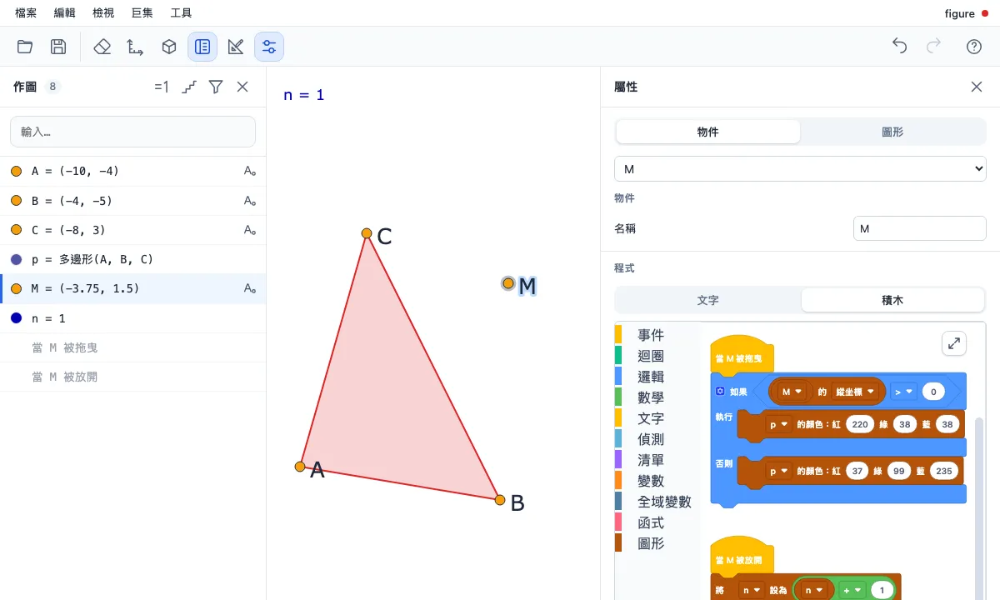
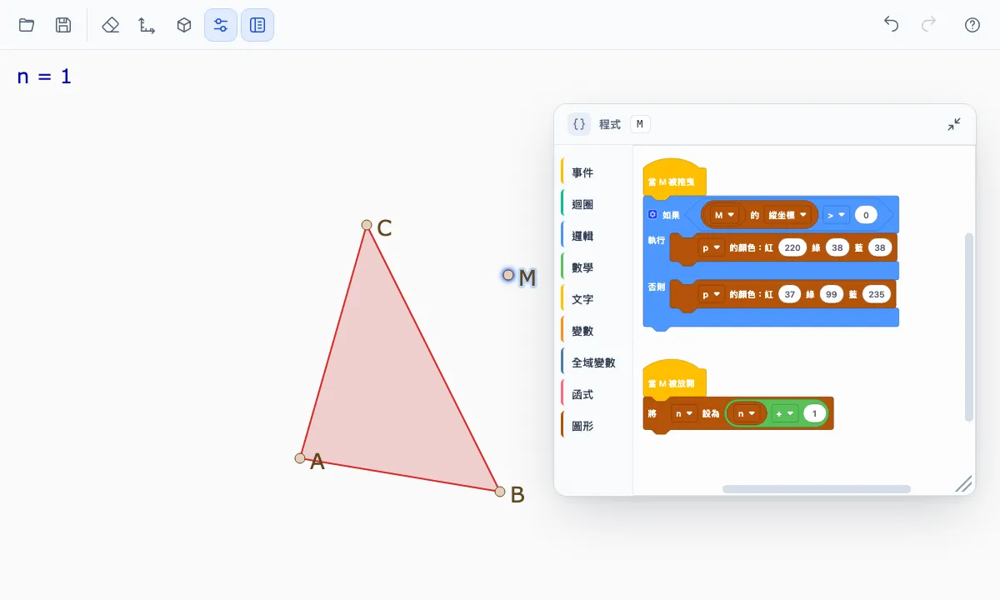

運算式與滑桿
運算式
凡是既不是點也不是指令的列，都會建立一個運算式，顯示在左上角，保留兩位小數。其類型由文字決定：
| 列 | 類型 |
|---|---|
a = 3、list = [1, 2, 3]
|
常數 |
t = "你好" |
文字 |
f = 0.5x^2 - 4 |
x（y、z、t）的函數；f(2)
呼叫它，f'(2) 呼叫它的導數
|
f(x) = ax^2 + bx + c |
函數的曲線，會被畫出：ax 讀作 a
x，並建立滑桿 a、b、c；f(2)
也呼叫它
|
f(x) = x^2, (-1 <= x <= 2)
|
在區間上繪製的曲線，寫法與 GeoGebra 相同（≤
或 <=）；可以缺少一個界限（(x >= 0)），每個界限也可以是公式（(0 <= x <= a)）
|
E = d(A, B) |
測量值，圖形移動時重新計算 |
u = "AB = " + round(d(A, B)*100)/100
|
計算出的文字 |
在公式中，點代表其座標，線段代表其長度，圓代表其半徑，多邊形代表其面積，角代表其度數。完整語法：公式與程式。
拖曳運算式的文字可以移動它；附著在點上的運算式會跟隨該點。點按運算式會選取它，在輸入時則寫入其名稱。它以 10 像素為步長放置，便於對齊。
滑桿
r = 滑桿(0, 5, 2)：從 0 到 5，值為
2。界限可以是運算式或公式（滑桿(0, d(A, B), 1)）。增量、長度、方向、滑鈕和動畫在屬性中設定。r = 5
會把它重新變為常數。選取後，也可以用彈簧讓它移動。
拖曳滑桿的末端可以加長或縮短它，步長為 20 像素。
以小寫字母開頭的未知名稱會建立一個從 −5 到 5 的滑桿，增量為
0.1，值為 1：A = (a, 4)、d = y = m x + p。希臘字母會建立一個從 0 到 360° 的角，增量為 1°，值為
45°（弧度制下為 0 到 2π）：P = (3; α)。被拒絕的列不會保留它的滑桿。
計算點
M = (x(B) + 1, y(A))：座標由公式給出。N = 點(2*B - A)：值為點的公式。P = (3; 60°)：極座標，半徑和角。
當name = formula這一列的值是一個點或點列表時，列尾的按鈕會提供點、點列表、線段列表或運算式。Enter選擇醒目顯示的按鈕：名稱為大寫時為點或列表，否則為運算式。因此要寫list = [1, 2, 3]而不是L = [1, 2, 3]，後者會被當作空間中的點。
點列表
q = 列表(pts)
畫出運算式pts中的點；未定義的點會使連線斷開。選取一個值為點列表的運算式時，情境區也會提供和（值為點時提供）：寫出相應的列並隱藏該運算式。
L = {A, (1, 2), 點(A + [1, 0])}：寫在大括號中的點列表，每個點由其名稱、座標或公式給出。多邊形(L)是以這些點為頂點的多邊形；元素(L, 2)（在參數中也可寫作L(2)）是它的第二個點：直線(L(1), L(2))。序列的用法相同：多邊形(序列((cos(k*360°/n), sin(k*360°/n)), k, 1, n))的頂點數隨滑桿 n 變化。
在公式中，L[0]是 L 的第一個點：方括號從 0
開始計數，元素從 1 開始。(L, 1)表示座標，而不是 L 的點：編輯器會拒絕它。
列表可以包含列表：M = {{(0, 0), (4, 0), (0, 3)}, {A, B, C}}，或對兩個列表 L 和 K 寫M = {L, K}。它畫出其中所有的點。元素(M, 1)是它的第一個列表：多邊形(元素(M, 1))；元素(M, 1, 2)是該列表的第二個點，在公式中寫作M[0][1]。
序列
L = 序列((k, k^2), k, -2, 2) 放置 k 從 −2 到
2、步長為 1 時的點 (k,
k²)；第五個參數給出另一個步長。元素也可以是數、線段(P, Q)、直線(P, Q)、圓(O, r) 或
多邊形(A, B, C, …)，其參數是關於 k 的公式：序列(圓(A, k), k, 1, 3)。在空間中，第三個參數給出圓的軸的方向
u（垂直於圓所在平面）：圓(O, r, u)。
一個序列可以包含另一個序列，其邊界讀取第一個序列的變數：序列(序列((i, j), j, 1, i), i, 1, 4)。在公式中，點列表依名稱讀取，從 0
開始：L[0]、L[k-1]，巢狀序列用
L[i][j]，元素個數用 L.length。請寫
2*i：2i 是複數。
程式
運算式可以是一個程式：敘述之間用;分隔，最後一條給出值；程式可以設定其他物件的樣式（S1.setHidden(1)）。語言：公式與程式。
- （工具面板的「程式」群組）開啟一個空白的程式；建立或Ctrl Enter 建立該運算式。
- 對於已有的運算式，屬性中的定義部分可多列編輯其文字：Enter保持縮排，Tab增加縮排，}減少縮排，Ctrl Enter套用，Esc還原，格式化依大括號縮排。
- 出錯時會選取出錯的列或未配對的分隔符號。
積木與海龜
程式也可以用積木撰寫：定義部分從文字切換到積木。從各類別（迴圈、邏輯、數學、文字、偵測、清單、變數、全域變數、函式、圖形）拖出積木，接在程式積木下方；傳回積木給出值。每次修改立即生效，並可像其他操作一樣復原。文字和積木顯示的是同一個程式：所作的選擇會保留給之後的程式。
全域變數由圖形的所有程式共用，在全域變數類別中用建立全域變數…建立；程式可以設定、增加或讀取它們。在活頁簿中，全域變數為所有頁面共有：在一個頁面中設定的全域變數，在其他頁面中值相同。
在清單類別中，L [ i ]積木讀取清單的第 i 項（第一項為第 1 項），L [ i ] = v積木修改變數或全域變數中的這一項。
的最後一項積木讀取清單的最後一項；將 … 加到 … 末尾讓變數的清單變長，移除 … 的第一項（或最後一項）讓它變短。斷開清單會中斷點清單繪製的線，就像海龜抬起畫筆：之後加入的點開始一條新線。
在迴圈類別中，等待 … 毫秒積木會暫停按鈕的程式，暫停期間圖形會重新繪製：足以逐步製作動畫。再次點按按鈕會停止正在執行的程式。
在偵測類別中，詢問 … 並等待積木提出一個問題，並暫停程式直到得到回答：在輸入框中鍵入，按 OK
或 Enter
鍵確認；之後回答積木讀取它，若是數字則當作數字（12.5），否則當作文字。程式的每次執行都有自己的回答。
在函式類別中，函式也可以給出一個值：到 … 返回積木會產生一個呼叫它的積木，可以像值一樣放置。程式的變數由它的函式共用，但 DGPad 圖形中的函式除外，它們像在 DGPad 中一樣，把自己設定的變數留給自己。
圖形類別還給出三點所成的角（角 180°，在 0 到 180° 之間，或
360°，有向角）、視窗寬度、單位長度（像素）以及視圖的其他量；… 的箭頭在清單各線段的端點畫箭頭（長度和寬度以像素計）。運算式積木接收一個輸入的公式，例如用
f(t)
計算圖形中的一個函式。在文字類別中，顯示訊息顯示一則訊息。
點的情境區域中的海龜會建立從該點出發的海龜，並以積木開啟。它可以前進（以像素或單位計）、轉向（以度計）、提筆或落筆、改變顏色和粗細、填滿、書寫、轉向某點或走到某點。它的圖形是一個清單，隨該點以及程式讀取的物件而變化。只要顯示其程式，海龜就畫在它最後的位置，朝向它的方向（在空間中是一個箭頭，背面朝向你時為綠色）：每加入一個積木，都能看到它前進或轉向。

海龜類別中的圖片積木在海龜所在位置放置一張置中的圖片，並朝向海龜的方向。它接收圖片的網址或
data:image/…
文字。寬和高以像素計（為 -1
時圖片保持原尺寸），縮放用於放大或縮小圖片（1：尺寸不變），不透明度的範圍是
0 到 1。
DGPad
圖形中的海龜以同樣方式開啟：在屬性面板開啟時，觸碰「作圖」面板中它們的
blk_turtle_exp_…
列。含有無對應積木的指令的程式仍以文字顯示。
DGPad 圖形中的按鈕（一個箭頭後接一個標籤）在被觸碰時執行其程式，即使屬性面板已開啟：這樣可以一邊修改程式一邊試執行。觸碰其帶三個點的圓圈會選取按鈕，拖曳它會移動按鈕；情境區域中的 設定以積木開啟其程式。「圖形」類別中的將 … 設為積木會改變一個運算式的值。
海龜和按鈕也可以透過工具面板的程式類建立：海龜從所選的點出發（在空白處會新建一個點），按鈕放在所選的位置；兩者都會立即以積木開啟其程式。在輸入列中鍵入按鈕("執行")會在視圖中心建立一個按鈕；在「作圖」面板中修改其列即可改變其標籤。
事件程式
和 Scratch 一樣，程式可以回應事件：可拖曳的點被拖曳、按下或放開，運算式的值改變。程式可以設定物件的樣式，並透過將 … 設為積木改變運算式的值或放置自由點。點在動畫中時，「拖曳」程式也會執行。
在工具面板的程式類中，當物件被拖曳、當物件被按下和當物件被放開選取一個可拖曳的點，當值改變選取一個運算式。程式以積木形式在其起始積木下開啟，例如當 M 被拖曳；如果已經存在，則直接顯示。

這裡，拖曳 M 時三角形在 x 軸上方為紅色，下方為藍色；放開 M 使 n 增加 1。
- 點或運算式屬性中的程式部分顯示它的所有程式（包括海龜），每個都在其起始積木下，均可修改。文字顯示最後點選的那個程式。
- 沒有程式時，新增程式會開啟事件類別：把一個起始積木拖曳到工作區即可建立程式。
-
每個程式在「作圖」面板中都有自己的一列，例如
當 M 被拖曳：點選該列即可開啟它。 - 把一組積木拖曳到類別列表上，或刪除其起始積木，即可刪除該程式。
- 在起始積木上按右鍵：摺疊積木組只保留這個積木，並以一個標記顯示積木數量；點選標記或選擇展開積木組即可重新展開。
- 在空白處按右鍵：複製所有積木；在積木上按右鍵：複製所選積木複製這個積木及其後面的積木。貼上積木把它們放在點選的位置，可用於同一物件、其他物件或其他圖形。連同起始積木一起複製時，如果物件的相同起始積木下方為空，它們就接在其下方，必要時會建立程式；否則留在旁邊，由您自行連接。
-
選取的積木若指明一個物件（圖形類別），或其中接有這樣的積木，就會取用隨後在圖形中點選的物件名稱：選取
賦值 n 成 a中的積木a，再點選滑桿 b，就得到賦值 n 成 b。在工作區的空白處點選即放開該積木：此後點選物件會顯示它的屬性。
積木右上角的按鈕會把積木放大到圖形上方的半透明視窗中：面板淡出，圖形保持原位。拖曳標題列可移動視窗（按兩下使其回到預設位置），拖曳角落可調整大小；同一個按鈕把積木放回面板。

DGPad 圖形中的事件程式（拖曳、按下和放開點，值的改變）也以同樣的方式開啟和修改。
DGPad 圖形中運算式或按鈕的開啟程式在圖形開啟時執行一次；它顯示在起始積木當圖形開啟時下方。